Next: Objectives Up: Constraints Previous: Quadratic Constraints
The previously-described constraints are typically (but not always) handled directly by the underlying optimization algorithms. Gurobi includes an additional set of higher-level constraints, which we collectively refer to as general constraints, that require special handling. We think of these as belonging to two types: simple constraints and function constraints
Simple general constraints are a modeling convenience. They allow you to state fairly simple relationships between variables (min, max, absolute value, logical OR, etc.). Techniques for translating these constraints into lower-level modeling objects (typically using auxiliary binary variables and linear or SOS constraints) are well known and can be found in optimization modeling textbooks. By automating these translations and removing the need for the modeler to perform them, the hope is that these simple general constraints will allow you to write more readable and more maintainable models.
Function constraints allow you to state much more complex
relationships between variables; you can require that 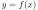, where
 and
and  are Gurobi decision variables and 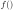 is chosen from a
predefined list of nonlinear functions. The common theme among these
functions is that there is no simple way to restate the associated
constraints using the primitive objects (like integer variables and
linear constraints) that a standard MIP solver wants to work with.
Alternate algorithms are required, and the resulting models are
typically much more difficult to solve than models that do not contain
these constraints.
are Gurobi decision variables and 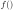 is chosen from a
predefined list of nonlinear functions. The common theme among these
functions is that there is no simple way to restate the associated
constraints using the primitive objects (like integer variables and
linear constraints) that a standard MIP solver wants to work with.
Alternate algorithms are required, and the resulting models are
typically much more difficult to solve than models that do not contain
these constraints.
Gurobi supports the following simple general constraints, each with its own syntax and semantics:
 should be equal to the maximum of the
operand variables
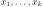 and the constant
should be equal to the maximum of the
operand variables
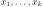 and the constant  .
For example, a solution
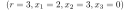 would be feasible
for the constraint
because
.
For example, a solution
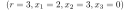 would be feasible
for the constraint
because  is indeed
the maximum of 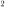, ,
is indeed
the maximum of 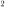, ,  , and 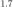.
should be equal to the minimum of the
operand variables
and the constant .
should be equal to the absolute value of the
operand variable .
For example, a solution 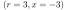 would be feasible
for the constraint
.
should be
, and 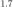.
should be equal to the minimum of the
operand variables
and the constant .
should be equal to the absolute value of the
operand variable .
For example, a solution 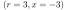 would be feasible
for the constraint
.
should be  if and only if all of the
binary operand variables
are equal to .
For example, a solution
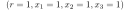 would be feasible
for the constraint
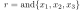.
Note that any involved variables that are not already binary
are converted to binary.
should be if and only if at least one of the
binary operand variables
is equal to .
Note that any involved variables that are not already binary
are converted to binary.
should be equal to the vector norm
of the operand variables
. A few options
are available: the 0-norm, 1-norm, 2-norm, and infinity-norm.
is equal to
if and only if all of the
binary operand variables
are equal to .
For example, a solution
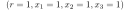 would be feasible
for the constraint
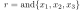.
Note that any involved variables that are not already binary
are converted to binary.
should be if and only if at least one of the
binary operand variables
is equal to .
Note that any involved variables that are not already binary
are converted to binary.
should be equal to the vector norm
of the operand variables
. A few options
are available: the 0-norm, 1-norm, 2-norm, and infinity-norm.
is equal to  in
a given solution, where
in
a given solution, where  ,
then the linear constraint
,
then the linear constraint  has
to be satisfied. On the other hand, if 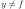 (i.e., 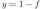)
then the linear constraint may be violated. Note that the sense of
the linear constraint can also be
has
to be satisfied. On the other hand, if 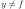 (i.e., 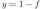)
then the linear constraint may be violated. Note that the sense of
the linear constraint can also be  or
or  ;
refer to this earlier section
for a more detailed description of linear constraints.
Note also that declaring an INDICATOR constraint implicitly declares the
indicator variable to be of binary type.
;
refer to this earlier section
for a more detailed description of linear constraints.
Note also that declaring an INDICATOR constraint implicitly declares the
indicator variable to be of binary type.
As stated above, each general constraint has an equivalent MIP formulation that consists of linear and SOS constraints, and possibly auxiliary variables. Thus, you could always model such constraints yourself without using a Gurobi general constraint. For example, the MAX constraint can be modeled as follows:
must be at least as large as each
of the operand variables 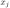 and the constant .
This could be modeled using inequalities, but the explicit slack
variables play an important role in the constraints that follow.
The next two constraints enforce
, which ensures that is equal
to the MAX expression. Enforcing this side of the equality is
actually a lot more complicated. We need to introduce
binary auxiliary variables
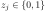, and
SOS1 constraints to required that at most one of the two variables 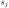 and
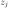 can be non-zero, which models the implication
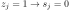.
Due to the third constraint, one will be equal to and thus at
least one will be zero.
Hence, 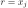 for at least one 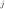 due to the first constraint,
or 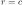 due to the second constraint.
Tolerances play a role in general constraints, although as you might expect, the exact role depends on the constraint type. As a general rule, violations in the resultant will be smaller than the feasibility tolerance, and integrality violations in integer resultants will also satisfy the integrality tolerance.
By most measures, general constraints are just a means of concisely capturing relationships between variables while removing the burden of creating an equivalent MIP formulation. However, general constraints have another potential advantage: Gurobi might be able to simplify the MIP formulation if it can prove during presolve that the simplified version suffices for the correctness of the model. For this reason, Gurobi might be able to produce a smaller or tighter representation of the general constraint than you would get from the most general formulation. For example, it might be the case that is already implied by the other constraints in the model, so that a simple set of inequalities
Norm Constraint
The norm constraint introduces a few complications that are important to be aware of. As mentioned above, this constraint allows you to set one variable equal to the norm of a vector of variables. A few norms are available. The L1 norm is equal to the sum of the absolute values of the operand variables. The L-infinity norm is equal to the maximum absolute value of any operand. The L2 norm is equal to the square root of the sum of the squares of the operands. The L0 norm counts the number of non-zero values among the operands.
Regarding the L2 norm, one obvious complication comes from the fact that enforcing it requires a quadratic constraint. If your model only ever bounds the result from above (e.g., 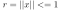), then the resulting constraint will be convex. If your model was otherwise convex, the resulting model will be a (convex) QCP. However, if you try to bound the result from below (e.g., 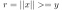), adding the L2 norm constraint will lead to a non-convex QCP model, which will typically be significantly harder to solve.
Regarding the L0 norm, note that results obtained with this constraint can be counter-intuitive. This is a consequence of the fact that for nearly any feasible solution with a variable at exactly 0, you can add a small value into that variable while still satisfying all associated constraints to tolerances. The net result is that a lower bound on the L0 norm is often satisfied by “cheating” - by setting enough variables to values that are slightly different from zero. We strongly recommend that you only bound the result from above. That is, you should avoid using the resultant in situations where the model incentivizes a larger value. This would include situations where the objective coefficient is negative, as well as situations where a larger value for the variable could help to satisfy a constraint (e.g., a greater-than constraint where the resultant appears with a positive coefficient).
Gurobi supports the following function constraints, each with somewhat
different syntax and semantics ( and below are Gurobi decision
variables, and other terms are constants provided as input when the
constraint is added to the model):

 , where
, where  is the base for the exponential function
is the base for the logarithmic function
is the base for the exponential function
is the base for the logarithmic function

 , where 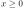 for any 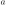 and 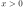 for 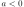
, where 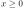 for any 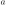 and 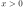 for 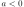
As noted earlier, there is no good way to restate these nonlinear constraints so that a standard MIP solver can handle them efficiently and accurately. The most effective approaches to solving such problems involve replacing the constraints with piecewise-linear approximations. Gurobi provides two different mechanisms for doing so:
Function Constraints with Static Piecewise-Linear Approximation
As noted earlier, the first option for managing function constraints is to perform a static piecewise-linear approximation, yielding a MIP model that can be handed to the standard MIP solver. Gurobi will take this approach for any function where the FuncNonlinear attribute is set to 0 (or that attribute is set to -1 and the global FuncNonlinear parameter is set to 0).
With this approach to handling non-linearity, you face a fundamental cost-versus-accuracy tradeoff: adding more pieces produces smaller approximation errors, but also increases the cost of solving the problem. The tradeoff can be complex. Gurobi provides a set of three attributes that help to navigate this tradeoff: FuncPieces, FuncPieceLength, FuncPieceError. They are used as follows:
, often
substantially, which can make it difficult to predict the
relationship between the width of each piece and the number of pieces.
The other relevant attribute is FuncPieceRatio, which controls whether the approximation is an underestimate of the function (0.0), an overestimate (1.0), or somewhere in between (any value strictly between 0.0 and 1.0). You can also choose the special value of -1, which will choose points that are on the original function.
Consider the following simple example:
FuncPieces to and
FuncPieceLength to 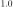, so we're performing an
approximation with fixed-width pieces of width 1.0. The
domain of is 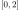, so the approximation has two pieces.
The figure shows 6 points:
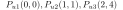, and
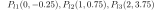. If
FuncPieceRatio is set to 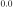, the approximation would be
built from the points below the function (
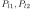, and
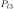). Similarly, if it is set to , the approximation would
be built from the points above the function (
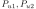, and
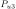). A value of 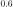 would use weighted combinations of
the points: times plus 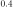 times . In this
case, the line segments would be built from the points
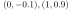, and . If FuncPieceRatio is set to  ,
meaning that the approximation would be built from points that are on
the original function, in this case the upper points (
,
and ) fit the bill. This will always be the case for a convex
function.
,
meaning that the approximation would be built from points that are on
the original function, in this case the upper points (
,
and ) fit the bill. This will always be the case for a convex
function.
Recall that you can set FuncPieces to to control the
maximum absolute error. In this case, choosing a
FuncPieceError value of would give the piecewise
approximation shown in the figure, since the distance between the
upper and lower curves is always . A smaller error value would
of course lead to more pieces. We should add that piece widths will
typically be non-uniform when limiting the maximum approximation
error. The approximation algorithms we use try to limit the number of
pieces needed to meet the error targets, which often requires more
refinement in some portions of the domain than in others.
Note that the approximations are guaranteed to be under- and over-estimates in all cases except for polynomials of degree greater than 5. Finding the roots of higher-degree polynomials, which would be required to guarantee this property, is quite difficult.
If you wish to experiment with different approaches to approximating a
set of functions, it is often convenient to be able to change the
approach for all functions at once. We provide a set of parameters
with the same names as the attributes to make this easier:
FuncPieces,
FuncPieceLength,
FuncPieceError, and
FuncPieceRatio. If you set
the FuncPieces attribute on a function constraint to , then
the approximation approach for that constraint will be determined by
the parameter settings instead.
For some of the supported functions, modest values can lead to
enormous values (and vice-versa). This can cause numerical issues
when solving the resulting piecewise-linear MIP model. To avoid such
issues, we limit the range of any or that participates in a
function constraint to [-1e+6, 1e+6]. The parameter
FuncMaxVal allows you to change
these limits, but we recommend that you proceed with caution.
We should point out we handle violations and tolerances differently for PWL approximations, which can sometimes lead to unexpected results. For one, the feasibility tolerance for function constraints is specified in FuncPieceError rather than through the standard feasibility tolerance. We also interpret violations differently. The violation of a function constraint is computed as the Euclidian distance from the solution to the nearest point on the function. Computing this distance exactly can be quite involved for some functions, so we actually compute an over-estimate in some cases. The net result is that the reported violations may be larger than you expect.
Another possible source of unexpected results comes from the fact
that solutions that satisfy the original nonlinear function may
not satisfy the piecewise-linear approximation of that function.
This may lead to sub-optimal solutions or even conclusions
of infeasibility.
Consider a simple example with two constraints:
and . Clearly
is a feasible solution, but
a piecewise-linear approximation could introduce breakpoints at
and . The resulting approximation gives a value of
at , which is sufficiently far from the actual function
value that Gurobi will not consider that a valid solution and declare
the model infeasible, since there are no other solutions to the
constraints. Reducing the maximum approximation error (by setting
FuncPieces to -1 and
FuncPieceError to a much
smaller value) would help, but this isn't always the best way to
address the problem, since tighter error tolerances can substantially
increase the number of pieces in the approximation and thus the cost.
We recommend the following approach when you encounter unexpected
results. For inequalities, you should ask for an approximation that
always overestimates or underestimates the function (depending on the
sense of the constraint), to ensure that your approximation will
always satisfy the constraint. The
FuncPieceRatio parameter
allows you to do this. For equalities, if you have a sense of where
your solution is likely to lie, one option for managing the size of
the approximation is to introduce additional variables to capture your
function in different ranges, and then perform approximations with
different levels of accuracy on these different pieces.
While users could perform piecewise-linear approximations themselves, there are several advantages to asking Gurobi to do it instead. First, Gurobi can often reduce the domains of variables, by using bound strengthening in presolve, or by exploiting repetition in periodic functions like sine or cosine. Smaller domains means fewer pieces to achieve the same accuracy. Gurobi also provides many options to make experimentation easier (for error control, piece length, etc.). These options can be quite difficult to implement and maintain.
Function Constraints With Dynamic Piecewise-Linear Approximation
The alternative for managing function constraints is a more dynamic approach, using spatial branching and outer approximation. Gurobi will take this approach for any function where the FuncNonlinear attribute is set to 1 (or that attribute is set to -1 and the global FuncNonlinear parameter is set to 1).
Solving a model with (nonconvex) nonlinear constraints to global optimality is well known to be a hard task. The idea behind spatial branching is to divide the overall solution space into portions, and to compute valid primal and dual bounds for each portion. Such bounds are obtained by computing a linear approximation to the feasible space for each region (a so-called outer approximation) that contains all feasible solutions for the original nonlinear constraints in that region. Bounds for a region can often be tightened by spatial branching, where the domain of a variable (integer or continuous) is split, allowing hopefully tighter outer approximations to be computed for the resulting feasible subregions. Bounds for the original model can be obtained by combining the bounds from the leafs of the resulting branch-and-bound tree. This process continues until the desired optimality gap (MIPGap) is achieved.
Valid primal bounds come from feasible solutions found during the search. They can be found using various heuristics, or they may come from solutions to the current node relaxation that happen to satisfy the nonlinear and integrality constraints (relaxation solutions will always satisfy linear and bound constraints because these are still present in the relaxation). Valid dual bounds are found by solving an LP over a polyhedron that contains all feasible solutions to the original linear and nonlinear constraints in that region (the outer approximation).
Currently, Gurobi only directly supports the univariate nonlinear functions listed in the Function Constraints section. More complex functions must be disaggregated into a cascade of supported univariate functions. For example, the nonlinear equality constraint
While the disaggregated reformulation is mathematically equivalent to the original model, we should note that the presence of large coefficients in the expression can lead to larger violations of the original constraints than you might expect, due to the accumulation of violations of the disaggregated constraints.
Suppose we are using the default feasibility tolerance of and Gurobi produces the following solution for the disaggregated model:
This example illustrates that a solution that is feasible for the disaggregated model may not necessarily be feasible for the aggregated (original) model. Clearly, the above example is an extreme case, but this issue can definitely arise in other situations. This makes scaling and tight coefficient ranges extremely important when formulating and solving nonlinear models.